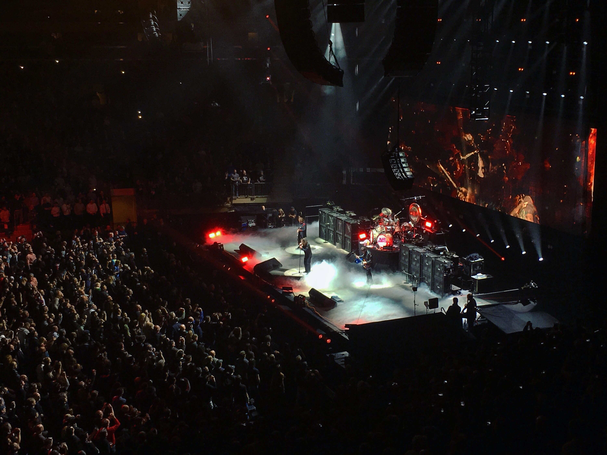
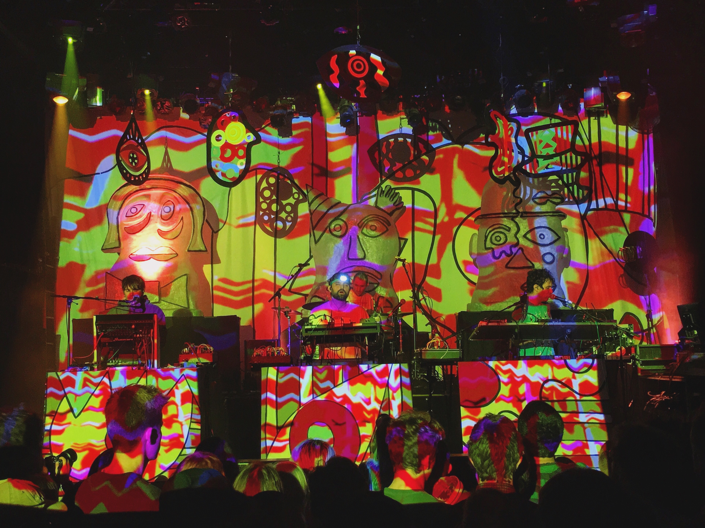

Black Sabbath • 2/25 • Madison Square Garden • New York, NY
February 26, 2016

When Black Sabbath first announced this performance, it was supposed to be one of the last performances of the U.S. tour, and the last time they ever played New York City. I don't know why I always fall for the farewell tour trick, but this has ended up being the first of their three "farewell" performances in the NYC area. Don't get me wrong, I don't want Black Sabbath to retire.
I saw Ozzy Osbourne for the first time at Ozzfest in 2000, and that day
Setlist:
Black Sabbath / Fairies Wear Boots / After Forever / Into the Void / Snowblind / War Pigs / Behind the Wall of Sleep / N.I.B. / Hand of Doom / Rat Salad / Iron Man / Dirty Women / Children of the Grave / Paranoid
ANIMAL COLLECTIVE • 2/23 & 2/24 • IRVING PLAZA • NEW YORK, NY
FEBRUARY 25, 2016

Fresh off the release of their new album, "Painting With," Animal Collective played two nights at Irving Plaza, a venue choice more intimate than their previous visits to New York City. These were my 7th and 8th times seeing the band, and just like each preceding tour, the shows offered a completely different stage design and setlist.
The great thing about seeing Animal Collective is that every tour offers a completely new experience. They are always heavy on new material and offer only a small handful of old songs, the visual and sonic experiences are colorful and precisely parrallel; sometimes Deakin is there. It is an approach that seemingly is a recipe for destruction should the band ever put out a bad record, but considering the devotion of most Animal Collective fans (myself included), I don't know if it would really make a difference.
Lucky for us, the new record is fun and translates well to a live setting. Ex-Ponytail member Jeremy Hyman fills in for Noah Lennox (Panda Bear) on drums, allowing Lennox, Dave Portner (Avey Tare), and Brian Weitz (Geologist) to stand front and center behind their respective setups. While the songs themselves were very well performed, the transitions were what really blew me away. The band was tigher than I have seen them in a long time, and they seemed to be enjoying themselves just as much as the crowd was enjoying the performance.
What is equally exciting about a new album and tour from Animal Collective is that usually means new solo albums and tours are usually the next step. Panda Bear and Avey Tare both had promising solo releases
Setlist (Night 1):
Golden Gal / Spilling Guts / Hounds of Bairro / Vertical / Daily Routine / Bees / Lying in the Grass / The Burglars / Bagels in Kiev / On Delay / Alvin Row / Recycling / Loch Raven / FloriDada
Setlist (Night 2):
Natural Selection / Gnip Gnop / Hocus Pocus / The Burglars / Jimmy Mack / Daily Routine / Golden Gal / Summing the Wretch / On Delay / Loch Raven / FloriDada / Bees / Lying in the Grass / Alvin Row
WELCOME...
FEBRUARY 22, 2016
I love live entertainment. I also love taking pictures and writing about music. For some reason it has taken this long for me to realize that these passions would work well together in the form of a blog that I can share with friends and like-minded fans. Maybe it will grow into something bigger or maybe no one will read it. Either way, I look forward to jotting down my thoughts and sharing my photos.